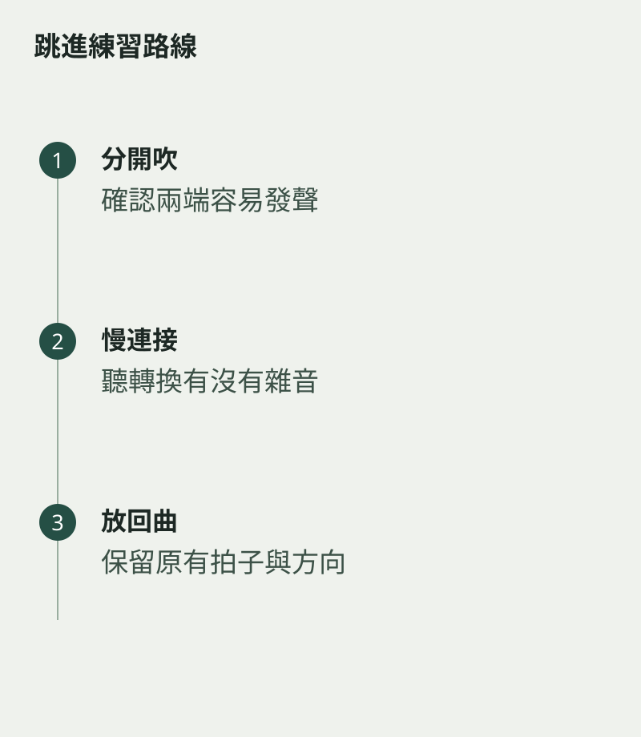

低音到高音之間，譜上只有一個跳進，身體卻像要重新開始。練長笛音程跳進，可以先把距離縮小，讓耳朵預先聽見目的地，再逐步拉開。手指移動、氣流調整與嘴唇細微變化，需要在同一刻相遇。
如果只盯着高音是否成功，低音往往會被匆忙帶過。結果前一個音沒有支點，後一個音只能靠突然加力。連貫感其實在出發之前已開始建立。
先把兩端各自吹清楚
把起音和目標音分開，確認兩者都能舒服地發聲。再用較小的音程連接，聽轉換中間有沒有多出的雜音。每次只改一個距離，別把不同指法與不同速度同時加進來。
練連音時，可先在心裏唱目標音，再吹過去。在心裏唱，可以讓手指與氣流有明確方向；它是輔助，不會取代技巧練習。若手指總提得很高，試試在不吹奏時輕輕轉換，觀察多餘動作在哪裏。

保留出發音的長度
用節拍器保持緩慢而舒服的拍子，兩個音各吹同樣拍數。留意是否每次到第二個音都提早半步。先練準時間，再縮短音值；能做慢動作，才容易看清真正需要協調的部分。
回到作品時，把跳進前一個小節也接上。音程練習裏的成功，需要經得起原來節奏的考驗。當你不再把高音當作一道障礙，樂句便能跨過距離，像走過一座窄橋，腳步沒有停，聲音也沒有被折成兩段。